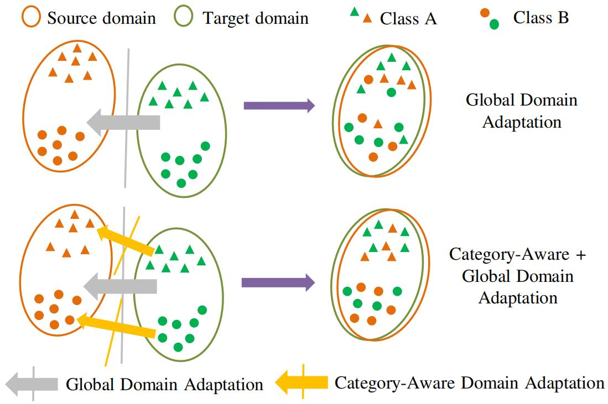
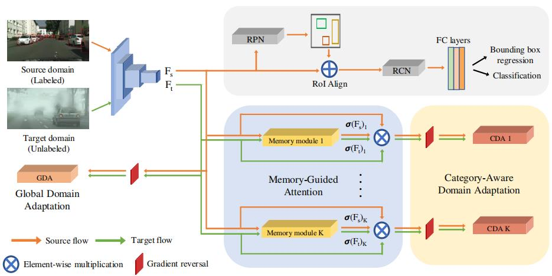
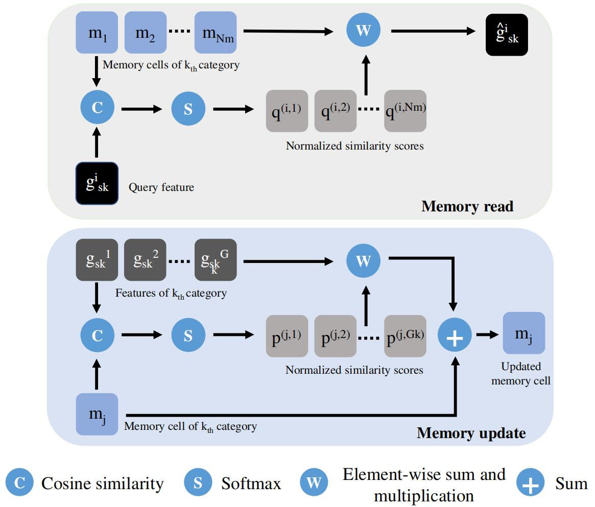
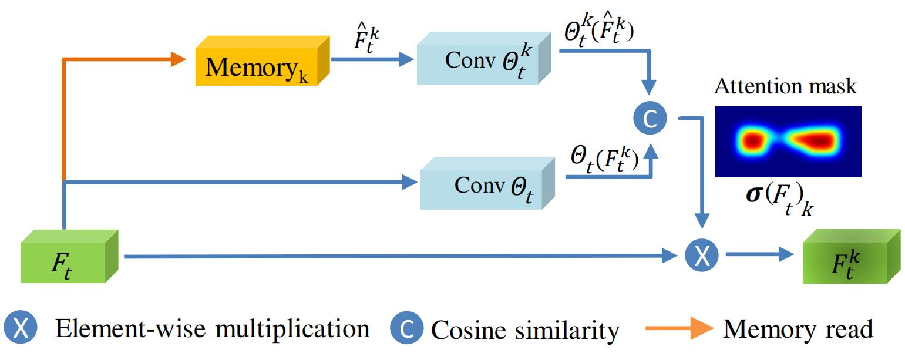
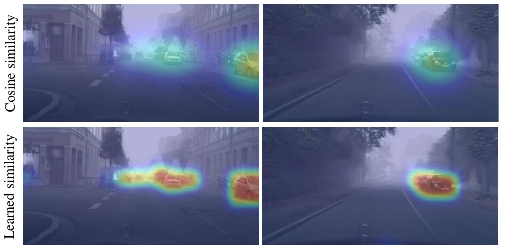
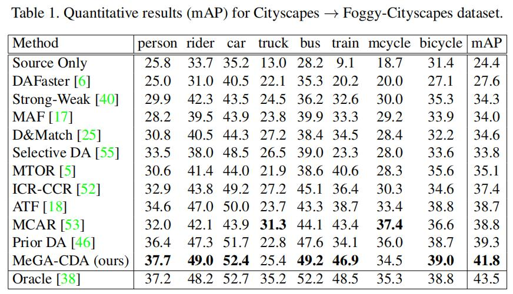

域适应目标检测：MeGA-CDA¶
综述¶
会议与时间：IEEE Conference on Computer Vision and Pattern Recognition 2021 (CVPR, 2021)
针对领域：域适应目标检测
主要思想¶
面对训练数据与测试数据的领域偏移问题，一种常用的方法就是通过无监督的领域自适应来对齐源域与目标域的特征分布，通过利用对抗损失来训练域分类器从而提升模型的领域适应能力。虽然现有的方法带来了相当大的改进，但是它们都是执行与类别无关的领域适应方法，在对齐领域数据分布时没有考虑类别信息，这有可能会导致数据错误对齐的情况，如下图所示：

上图第一行仅用全局自适应，第二行同时使用全局自适应与类别相关的自适应。
考虑到这个问题，作者除了在全局领域执行对齐之外，还关注对类别特征执行对齐，从而将类别信息纳入领域适应的过程中。具体的来说，作者设计了一种像素级别的类别相关判别器(Category-wise discriminators)(下面简称类判别器)，对每个类别使用不同的类判别器执行领域自适应。但是，在无监督的领域自适应中，对于目标域数据集没有边界框注释，因此难以得到目标域的类别特征，从而难以训练特定的类判别器。
为了解决这一问题，作者提出了用于类别特征对齐，并且由记忆引导的注意力机制，该机制主要的作用就是生成关注原图中特定类别物体位置的注意力图，因此，可以用于将主干特征分配到适当的类判别器中，即将属于特定类别的特征分配到特定的类判别器，作者参考论文《Learning Memory-guided Normality for Anomaly Detection》，提出了利用记忆网络来生成注意力图。在训练过程中，由于记忆网络可以长期存储数据的特性，因此这些记忆模块用于存储不同类别对象的原型特征(prototypes)。为了确定特定位置的注意力，作者使用该位置提取到的特征来进行查询，从不同类别特定的记忆模块中检索相关记忆单元，然后将检索到的记忆单元特征与查询的特征进行比较，得到相似性矩阵，最后根据相似性矩阵生成类别特定的注意力图。此外，为了提高记忆模块和注意力图生成过程的有效性，作者还提出了一种基于度量学习的相似性计算方法，利用源域数据集来学习适当的相似性度量。
方法¶
与大多数域适应目标检测一样，作者假设所有的源域图像都具有标签(如边界框、类别)，而目标域图像没有任何标签。本文中，令D_s=\{X_s^i,b_s^i,y_s^i\}^{N_s}_{i=1}表示源域数据集，其中X_s^i表示第i张图片、b_s^i和y_s^i表示第i张源域图片的边界框标注和对应的物体类别标签，并且类别标签包含K个物体类别和一个额外的背景类别，即y_s^i\in\{1,2,\dots,K+1\}，进一步，假设目标域数据为D_t=\{X^i_t\}^{N_t}_{i=1}，其中X^i_t表示第i张目标域图片。最后，使用Faster R-CNN作为基础模型。算法的目标就是利用源域标签信息去学习一个在目标域图像上表现良好的网络，与以前的算法一样，作者采用特征对齐的方法，通过领域对抗的训练来匹配由特征编码网络提取的源域和目标域数据图像的特征分布，微调模型的特征表示从而使网络具有一定的领域适应能力。
网络结构¶
下图展示了算法的主要流程，主要由三个模块组成：①全局领域判别器(Global discriminator)：对齐由特征编码网络提取的整个特征图；②类判别器(Category-wise discriminators, CDA)：关注各个特定类别的信息，对齐源域和目标域之间属于相应类别的特征；③记忆指导的注意力机制(Memory-guided attention mechanism)：通过在提取到的特征图上生成特定类别的注意力图，进一步利用类别注意力图来将原始特征分配到不同的类判别器中。通过使用存储特定对象类别相关信息的记忆模块来产生注意力，该注意力可以帮助网络关注特征图中的类别信息，从而训练各自的类别判别器。

全局判别器¶
作者参考Domain Adaptive Faster R-CNN算法(论文链接、论文笔记链接)，在网络中应用了全局判别器来对齐图像水平(image-level)的特征图。假设\mathcal D_{gda}表示全局判别器，输入由主干网络提取的特征图，之后训练其领域分类的能力，即让其判断该特征图是从源域图像提取的特征还是目标域图像提取的特征。假设特征图F_s,F_t\in\mathbb R^{C\times H\times W}分别为从源域图像X_s和目标域图像X_t提取的特征，全局判别器\mathcal D_{gda}输出一张尺寸为H\times W的领域预测图（因此全局判别器执行的是像素级别的对齐），源域图像和目标域图像的标签y_d分别为0和1，全局判别器的损失可以表示为：
类别相关的判别器¶
作者设计了类别相关的判别器来使网络在对齐源域和目标域特征的同时解决类别之间的特征负迁移问题，该鉴别器专注在源域和目标域之间对齐各自特定的类别特征。具体地来说，作者使用K个类判别器，每个都侧重于对齐各自的类别，假设第k个类别的判别器表示为\mathcal D_{cda}^k，为了对齐源域和目标域之间第k类的特征F_s和F_t，首先生成注意力图\sigma(F_s)_k,\sigma(F_t)_k\in\{0,1\}^{H\times W}，通过注意力图来让网络只关注第k类相关的特征信息，第k类的类别适应损失函数可以写成：
现在主要的问题就是在类判别器训练的过程中缺少特征图中类别位置的信息(即缺少注意力图)，尤其是目标域的特征数据，对此，作者提出了一种基于记忆引导的注意力机制，通过利用记忆模块来预测每个类别位置的注意力图，进一步解决上述位置信息缺失的问题。
基于记忆引导的注意力机制¶
作者分别为K类构建了K个记忆模块，这些记忆模块用于在训练过程中存储不同对象的类原型，以便可以检索他们来计算特定类别的注意力图。
记忆模块¶
作者参考论文《Learning Memory-guided Normality for Anomaly Detection》里面用于异常检测的记忆模块，设计了用于域适应目标检测的记忆模块
一个记忆模块主要有两个操作，分别为写(write)和读(read)。写操作就是利用提取到的特征来适当地更新记忆模块的内容，读操作就是利用提取得到的特征来查询记忆模块，并且检索出最相似的记忆元件(或原型特征)，即找出该特征与哪个类别的记忆特征最相似。这两个操作的流程图如下图所示：

本算法中，一共构建了K个记忆模块(仅对应不同的类别，与领域无关)，源域和目标域中第K个类别的记忆模块表示为M_k\in\mathbb R^{N_m\times C}，其中N_m表示每个类别的记忆单元数量（一个记忆模块由多个记忆单元组成），C表示特征图中通道数。
记忆写入
由于源域图像可以利用标签的边界框与类别信息来定位特征图F_s中类别特定的特征，因此只考虑利用源域图像数据来更新记忆模块。为了简洁起见，假设G_k=\{g_{s_k}^i\in\mathbb R^{1\times C}\}^{N_{s_k}}_{i=1}表示在特征图F_s中属于类别k的所有特征(即一张图中所有类别为k的像素点特征集合)。同时，将每个记忆模块中的记忆单元表示为m_j\in\mathbb R^{1\times C}，其中j\in\{1,\dots,N_m\}。首先计算M_k中记忆单元与第k类特征集合G_k之间的标准化相似度量：
记忆读取
为了利用得到的特征对记忆单元做检索，首先计算记忆模块M_k中每个单元与给定的查询特征之间的相似度，注意，查询特征可以从源域图像或者目标域图像获得(均是像素级别的特征)，例如：g^i_{s_k}或者g_{t_k}^i。对于g_{s_k}^i，使用下式计算归一化相似度：
注意：记忆模块的写操作只面向源域数据，并且只利用边界框标签对表示特定类别的特征做裁剪，之后将得到的特征写入记忆模块，因此写操作中的g^i_{s_k}只表示边界框内部、特定类别的特征向量；而读操作同时面向源域数据和目标域数据，并且没有用到源域数据中的边界框信息，因此读操作中的g^i_{s_k}表示特征图上所有像素点的特征向量(这里直接表示成g^i_s更合适)。
记忆训练（这里做了一点更新，和原论文形式不太一样，具体可见问题记录）
遵循原论文，作者额外新加了两个正则化器来约束网络模型。首先，为了确保提取到的特征不离记忆模块太远，设立了紧密度损失(compactness loss)来进一步规范特征，通过促进查询特征之间的紧凑性来减少类内变化，该损失由L2距离惩罚组成：
其次，除了将记忆模块调整得更紧凑之外，还设计了唯一性损失(uniqueness loss)来约束模型特征的表示，该损失由三元组损失(triplet loss)函数构成，通过促进记忆模块M_k中每个记忆单元表示类别唯一的原型来减少记忆模块中的数据冗余：
如果记忆模块中记忆单元所存储的特征数据相似度过高、数据冗余性过强(有点类似过拟合)，会降低记忆网络的泛化能力，进一步降低模型的性能。该损失促进了两个距离值的分离，即促进了查询特征向量和第二个最近的记忆单元相远离，和第一个最近的记忆单元相靠近，进一步分离记忆模块中的所有单元，增强辨识能力。
综上所述，记忆模块的总损失可以表示为：
注意力机制¶
作者使用所有的记忆模块去为每个类判别器生成注意力图。具体的来说，为目标域数据的特征图F_t计算注意力图，首先在第k个记忆模块中查询特征图中每个位置的特征元素f_t\in\mathbb R^{1\times C}(C表示通道数)，得到检索特征向量\hat{f}_t\in\mathbb R^{1\times C}，依次遍历所有位置，最后得到检索特征图(retrieved feature map)\hat{F}^k_t\in\mathbb R^{C\times H\times W}。之后再计算提取到的特征图F_t和检索特征图\hat{F}^k_t之间的元素相似性来得到注意力图\sigma(F_t)_k，对应于第k类的类判别器，这里作者探索了两种相似度方程来计算注意力图。
余弦相似度
最常用的相似度计算方程就是余弦相似度，利用余弦相似度计算元素相似性的公式为：
可学习的相似性
当使用余弦相似性去计算注意力图时，模型性能有了合理地提高，但生成的注意力图并不准确(具体可见可视化分析)。为了解决这一问题，作者设计了一种基于度量学习的相似性计算方法，在计算相似性之前，引入了一组可学习的参数，即添加了一组卷积层。F_t和\hat{F}^k_t首先依次经过网络\Theta_t和\Theta^k_t，利用源数据集中的边界框来监控网络，具体来说，对于类别k所在的位置，最大化\Theta_t(F_t)^{(h,w)}和\Theta^k_t(\hat{F}^k_t)^{(h,w)}之间的余弦相似性，以及最小化不相关类别之间的相似性，这里作者在论文中少加了一个损失(具体见问题记录)，应该再加一个：
作者并没有直接回复该损失是怎么构建的，因此上面的公式是我自己根据论文理解构造的，性能还没经过验证，如果有不对的地方，欢迎指正
该模块整体结构如下图所示：

注意力图可以表示为：
思路总结：
- 作者设计了K个类判别器，用于对齐K个类别的特征，主要的问题就在于原图上有可能有多个物体，因此有可能有多种类别的特征，而且目标域图像缺少边界框标签，因此无法直接得到单个类别的特征，得不到类别特征就没法进行对齐。
- 因此作者引入了注意力机制的概念，通过类别特定的注意力图来凸显原图上该类的特征，即第二个公式中注意力图与原特征做点乘的操作，现在的目标就转向了生成K张注意力图。
- 对此，作者引入了记忆模块的概念，利用记忆模块存储每一类独特的特征，将测试过程中得到的特征与记忆模块存储的特征做匹配(检索)，来生成特定类别的注意力图。因此一共构建了K个记忆模块，分别对应K个类别，每个记忆模块中有N_m个记忆单元，而每个记忆单元的尺寸均为1\times C，与特征g_{s_k}^i相对应。
- 将提取到的特征F_t传入记忆模块，按位置切分，即得到像素级别的特征，一共得到W\times H个尺寸为1\times C的特征向量，之后再将它们按所属的类别进行分类，划分成K份(由于一张图中可能物体种类不全，因此有的可能是空集)，这里就对应G_k，而g_{s_k}^i就对应刚才提到尺寸为1\times C的特征向量。
-
分好特征集合之后，再依次进行写入、读取操作(注意，这里也是按单个特征向量进行写入、读取操作)，写操作只面向源域数据，读操作同时面向两个领域的数据。两个操作的核心就是求相似度矩阵，写操作求的是特征条g^i_{s_k}的权重，用于更新记忆单元m^j，因此以集合G_k为整体，相似度矩阵p是按G_k归一化，对应分母l\in G_k；而读操作求的是记忆单元m^j的权重，用于求检索特征向量\hat{g}^t_{s_k}，因此以记忆单元m^j的集合M_k为整体，相似度矩阵q按M_k进行归一化，对应分母l\in N_m。
-
读写操作很好地完成了记忆模块的更新和应用两个功能，测试过程中，将得到的特征进行检索（也就是”读”操作），最后根据检索结果生成注意力图，此时一共生成K张，最后该注意力图再与原特征做点乘，凸显出原特征属于该类别的区域特征，最后再依次对齐经过注意力图处理后的特征(一共对齐K次，对应K类)，完成类别相关的对齐功能。
注意：因为最后的特征对齐是按像素点来对齐的（特征图上每个位置均产生一个领域置信度，所有位置都会依次产生一个损失，最后损失再求均值，这里又称为像素级别的对齐），所以这里求注意力图时也是按像素点来求的，因此一开始要将原始特征切成W\times H个小矩形块，一块一块地求，最后再拼接起来。
个人观点，若有错误，欢迎指正
MeGA-CDA总损失¶
在模型的训练过程中，还在源域数据上添加了检测损失\mathcal L_{det}，包括边界框回归损失和物体类别损失，综上所述，模型的总损失可以表示为：
实验¶
可视化分析¶
为了对比使用余弦相似性和基于度量学习的相似性所产生的效果，作者将二者得到的注意力图做了可视化，具体对比效果可见下图：

上图第一行为利用余弦相似性计算得到的注意力图，第二行为利用基于度量学习的相似性计算得到的注意力图。从图中可以发现，基于余弦相似性的注意力对汽车所在的位置提供了合理的关注，但是关注力度不够强、并且关注点也比较分散，而基于度量学习的方法关注效果更为理想，并且关注点也较为集中。
mAP对比¶
Cityscape \rightarrow FoggyCityscape

总结¶
本文提出了一种用于域适应目标检测的类别特征对齐方法，具体地来说，通过构建类判别器来将类别信息纳入领域对齐的过程中。为了克服缺乏目标域类别特征所产生的问题，作者提出了一种由记忆引导的注意力机制，该机制可以生成类别特定的注意力图来将主干特征提取网络得到的特征分配到不同的类判别器中。通过对齐类别特征，可以减轻由全局特征对齐引起的领域负迁移问题，进一步提升模型的领域适应能力。
注：以上理解以及对原文的修改仅是笔者的个人见解，若有错误，欢迎大家批评指正
最后一次修改日期：2022年2月10日